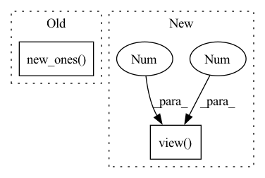

Pattern ID :6311
Before Change
F = s_squared.view(size + (1, 3)).expand(size + (3, 3)) - s_squared.view(
size + (3, 1)
).expand(size + (3, 3))
F = torch.where(F == 0, grad_output.new_ones( 1) * torch.inf, F)
F = F.pow(-1)
u_term: torch.Tensor = u @ (F * _skew_symm(ut @ grad_u))After Change
(u[..., :2], u[..., 2:] @ sign), dim=-1
)
s_squared: torch.Tensor = s.pow(2)
F = s_squared.view( *size, 1 , 3 ) .expand(*size, 3, 3) - s_squared.view(
*size, 3, 1
).expand(*size, 3, 3)
F = torch.where(F == 0, constants._INF, F)In pattern: SUPERPATTERN
Frequency: 3
Non-data size: 2
Instances Fragment ID: 21843596
Project Name: facebookresearch/theseus
Commit Name: 1c490f68fe7ac48e7a29dcb129babe3a225f73b1
Time: 2023-05-04
Author: 6612911+fantaosha@users.noreply.github.com
File Name: theseus/labs/lie/functional/so3_impl.py
M Class Name: AnonimousClass
N Class Name: AnonimousClass
M Method Name: _normalize_backward_helper(5)
N Method Name: _normalize_backward_helper(5)
M Parent Class:
N Parent Class:
M File Name: theseus/labs/lie/functional/so3_impl.py
N File Name: theseus/labs/lie/functional/so3_impl.py
M Start Line: 989
M End Line: 1002
N Start Line: 1001
N End Line: 1014
Before Change
theta2 = theta**2
// Compute the approximations when theta ~ 0
near_zero = theta < constants._SO3_NEAR_ZERO_EPS[tangent_vector.dtype]
non_zero = tangent_vector.new_ones( 1)
theta_nz = torch.where(near_zero, non_zero, theta)
theta2_nz = torch.where(near_zero, non_zero, theta2)
cosine = torch.where(near_zero, 8 / (4 + theta2) - 1, theta.cos())After Change
size = tangent_vector.shape[:-1]
ret = (
one_minus_cosine_by_theta2
* tangent_vector.view( *size, 3 , 1 )
@ tangent_vector.view(*size, 1, 3)
)
ret[..., 0, 0] += cosine.view(size)
ret[..., 1, 1] += cosine.view(size) Fragment ID: 21843599
Project Name: facebookresearch/theseus
Commit Name: 1c490f68fe7ac48e7a29dcb129babe3a225f73b1
Time: 2023-05-04
Author: 6612911+fantaosha@users.noreply.github.com
File Name: theseus/labs/lie/functional/so3_impl.py
M Class Name: AnonimousClass
N Class Name: AnonimousClass
M Method Name: _exp_impl_helper(1)
N Method Name: _exp_impl_helper(1)
M Parent Class:
N Parent Class:
M File Name: theseus/labs/lie/functional/so3_impl.py
N File Name: theseus/labs/lie/functional/so3_impl.py
M Start Line: 195
M End Line: 215
N Start Line: 185
N End Line: 204
Before Change
// a size (B,) mask that removes non-firing position
if keep_all_tails:
extend_mask = feat_lengths.new_ones( (B,))
else:
extend_mask = tail_weights >= (beta / 2)
// // extend 1 fire and upscale the weightsAfter Change
.scatter(
1,
feat_lengths.view(B, 1, 1).expand(-1, -1, C),
beta / tail_weights.view( B, 1 , 1 ) .expand(-1, -1, C),
)
)
output[extend_mask] *= upscale[extend_mask] Fragment ID: 21843601
Project Name: george0828zhang/torch_cif
Commit Name: 68e2689c475308cd5043cf1d25c49891b23e946a
Time: 2022-02-23
Author: cc.chang0828@gmail.com
File Name: cif.py
M Class Name: AnonimousClass
N Class Name: AnonimousClass
M Method Name: cif_function(7)
N Method Name: cif_function(9)
M Parent Class:
N Parent Class:
M File Name: cif.py
N File Name: cif.py
M Start Line: 29
M End Line: 216
N Start Line: 27
N End Line: 197